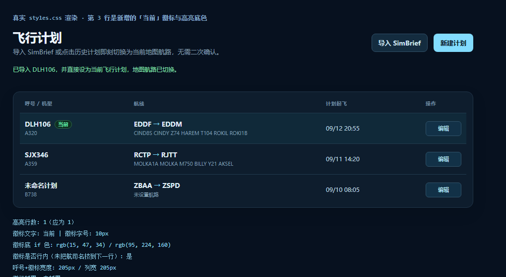

FlightPlansPage.tsx / route-procedures.ts / styles.css「在导入计划后直接激活导入的计划，不要让用户再手动点一次确认。」
原流程里有两处多余的点击：点历史计划会弹一个原生确认框（window.confirm，
文案正是「确认将 … 导入为当前飞行计划？」），导入 SimBrief 后也没有把计划真正交到手上。
地图侧当前计划不是存出来的一个「active」标志，而是约定：
// src/pages/MapPage.tsx const activePlan = flightPlans.data?.[0]; // src-tauri/src/commands/flightplan.rs SELECT … FROM flight_plans ORDER BY imported_at DESC, updated_at DESC
也就是说：激活 = 把这条计划的 imported_at 刷新成当前时间，
它就会排到列表第一条，地图随之切换航路。原有的「导入」流程其实已经写了新的
importedAt，所以它本来就该生效 —— 真正挡在中间的是那个确认框。
| 位置 | 改动 | 效果 |
|---|---|---|
| FlightPlansPage.tsx | 删掉 activatePlan 里的 window.confirm |
点历史计划直接激活 |
| FlightPlansPage.tsx | 导入 SimBrief 成功后写入 flight-plans 查询缓存 + 给出「已导入并直接设为当前飞行计划」提示 |
导入完地图立刻换航路，无需再点 |
| route-procedures.ts | 新增 detectPlanRouteProcedures(plan, lookup)：落库前按航路补齐 SID/STAR、跑道与航迹点 |
激活的航迹一次到位（见下节） |
| FlightPlansPage.tsx | 页面文案改为「导入 SimBrief 或点击历史计划即刻切换为当前地图航路，无需二次确认」；列表首行加「当前」徽标 + 高亮 | 没有确认框后，仍能一眼看出哪条在生效 |
这是本次改动里最容易被忽略的一环。终端程序的识别原本只发生在编辑器组件里 （打开编辑计划 → 读到程序表 → 自动补 SID/STAR），而补出来的值要按「保存」才落库。 于是「导入后不打开编辑器」的计划，数据库里就是干干净净的：
-- 用户真实计划（改动前实测） callsign: DLH106 | EDDF -> EDDM route : CIND8S CINDY Z74 HAREM T104 ROKIL ROKI1B sid : NULL star: NULL rwy: None / None
如果只是「自动激活」，用户拿到的会是一条没有离场/进场航迹的计划 —— 上一轮刚修好的 SID/STAR 识别又白做了。所以补齐逻辑被抽成纯函数，导入与激活两条路径都在落库前调用它：
// src/lib/route-procedures.ts（可注入查库入口，便于脱离 Tauri 验证）
export interface ProcedureLookup {
procedures: (icao: string) => Promise<NavigationAirportProcedures>;
points: (procedureId: number, runway: string, transition: string) => Promise<FlightRoutePoint[]>;
}
export async function detectPlanRouteProcedures(plan: FlightPlan, lookup: ProcedureLookup): Promise<FlightPlan>
procedureSelection / procedureSupportsRunway / validAirportIcao
从页面移到 lib，手动选择、编辑器自动识别、导入补齐三处共用一份，不再各写一份跑的是编译出来的真实模块，查库入口接到按 navigation.rs 逐行复刻的
Python 查询（真实 nd.db3），输入是应用数据库里那条真实计划（sid/star/跑道全空）：
PASS 识别出 SID = CIND8S PASS SID 有可绘制点 -> 7 个点 PASS 识别出 STAR = ROKI1B PASS SID 末点接上航路首点 CINDY PASS 起飞跑道定为 18 PASS STAR 有可绘制点 -> 2 个点 PASS 落地跑道定为 26L PASS STAR 首点接上航路末点 ROKIL PASS 航路点未被破坏（13 个） PASS 自动定下的跑道能取到点 -> RWY 26L 2 个点 PASS 跑道留空则取不到点 -> 0 个点（所以必须先定跑道） PASS 再次运行不改变已有 SID/STAR PASS 手动填的 SID 优先级高于自动识别 -> MANUAL1 / 07C PASS 首 token 是航路点时误判 SID PASS 单 token 且只在场站 STAR 表里 → 不当作 SID PASS 非四字代码不查库 PASS 查库抛错时原样返回计划 PASS 查库失败后不再尝试取点 PASS 查库失败仍照常问过两个机场 21/21 通过，共 19 次真实查库 识别结果：SID CIND8S (RWY 18, 7 点) → 航路 13 点 → STAR ROKI1B (RWY 26L, 2 点)
另有 tsc -b 0 error、vite build 成功（FlightPlansPage 22.22 kB / gzip 7.23 kB）。
用真实 styles.css 在无头 Chrome 里渲染同一套行结构，确认「当前」徽标不挤占航司名、不越界：

getClientRects().length === 1）、未越出所在列；高亮行数 1。